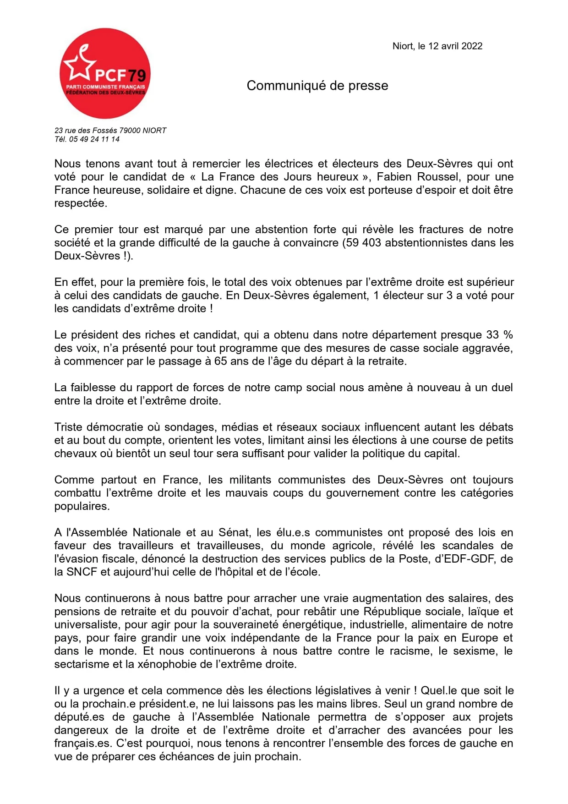

Publication d’archives
Communiqué de presse, élection présidentielle
Date indiquée par Facebook · 12 avril 2022
Texte conservé avec la publication
Communiqué de presse, élection présidentielle
Contexte du dossier
En janvier, le PCF 79 partage une lettre de Fabien Roussel aux Françaises et aux Français. Le 12 avril, il diffuse sous forme d’image son communiqué après le premier tour de la présidentielle. Le document commente la situation issue du vote et pose déjà la question du rassemblement pour les législatives. Le compte partage ensuite le clip national de campagne pour le scrutin des 12 et 19 juin. La lettre du candidat, le communiqué de la fédération et le clip national donnent trois niveaux de parole à la campagne.

Sources
Archive rouge · export Facebook · AR-0002-FB-01902
À lire aussi · Compte-rendu de la conférence de presse du PCF79 dans la presse locale du 19 septembre.